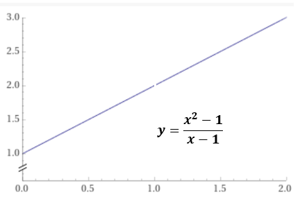

Raja-arvot
Contents
Raja-arvot¶
Differentiaalilaskennan keskeinen käsite on derivaatta. Derivaatan määrittelyyn tarvitaan raja-arvon käsitettä.
Tällä kurssilla riittää raja-arvon käsitteen intuitiivinen ymmärtäminen. Lisäksi opetellaan murtolausekkeiden raja-arvojen laskeminen yksinkertaisissa tapauksissa sellaisissa kohdissa, joissa lausekeen arvoa ei ole määritelty.
Raja-arvon intuitiivinen määritelmä
Vaikka funktio f(x) ei olisi määritelty kohdassa \(x = x_0\), on mahdollista, että funktion arvot lähenevät rajatta tiettyä äärellistä arvoa a, kun muuttujan x:n arvot lähestyvät arvoa \(x_0\). Tällöin lukua a kutsutaan funktion f raja-arvoksi, kun x lähestyy arvoa \(x_0\). Tätä merkitään seuraavasti:
\(\underset{x\to x_0}{lim}f(x)=a\)
Esim. funktiota \(y = \frac {x^2 -1}{x-1}\) ei ole määritelty kohdassa x = 1, mutta kuvaajan perusteella funktion arvot lähestyvät molemmilta puolilta raja-arvoa 2 lähestyttäessä kohtaa x = 1.

Murtofunktion raja-arvo nimittäjän nollakohdassa¶
Murtofunktio ei ole määritelty nimittäjän nollakohdissa.
Sillä voi silti olla äärellinen raja-arvo siinä edellyttäen, että ko. nimittäjän nollakohta on myös osoittajan nollakohta.
Raja-arvo voidaan usein laskea helposti sen jälkeen, kun nimittäjän ja osoittajan yhteinen tekijä on supistettu pois.
Laske lausekkeen \( \frac{3x^2+2x}{2x} \) raja-arvo kohdassa x = 0
Esitetään osoittaja tulomuodossa, ja supistetaan yhteinen tekijä pois
\( \frac{3x^2+2x}{2x}=\frac{x(3x+2)}{2x}=\frac{(3x+2)}{2} \)
Supistamisen jälkeen sijoitus x = 0 antaa raja-arvoksi \(\frac{(3\cdot 0+2)}{2}=1\)
Mitä arvoa lähestyy \( \frac{x^2-4}{x-2} \) , kun x lähestyy arvoa 2 ?
Viedään osoittaja tulomuotoon kaavalla \(\color {red} {a^2-b^2 =(a-b)(a+b)}\) ja supistetaan.
\( \frac{x^2-4}{x-2}= \frac{(x-2)(x+2)}{x-2}=x+2\)
Sijoitus x = 2 antaa raja-arvoksi 2+2 = 4
Raja-arvomerkintä¶
Edelliset laskut voi kirjoittaa seuraavasti käyttämällä raja-arvomerkintää
\(\underset{x\to 0}{lim}\frac{3x^{2}+2x}{2x}=\underset{x\to 0}{lim}\frac{x(3x+2)}{2x}=\underset{x\to 0}{lim}\hspace{2mm}\frac{3x+2}{2}=\frac{3\cdot 0+2}{2}=1\)
\(\underset{x\to 2}{lim}\frac{x^{2}-4}{x-2}=\underset{x\to 2}{lim}\frac{(x-2)(x+2)}{x-2}=\underset{x\to 2}{lim}\hspace{2mm}(x+2)=2+2=4\)
Raja-arvot WolframAlpha -laskimessa¶
WolframAlphassa on raja-arvojen laskemista varten komento limit. Esimerkki:
\(\color{red} {limit\hspace{2mm} (x^2-4)/(x-2)\hspace{2mm}as\hspace{2mm}x->2}\)
antaa tulokseksi 4
Raja-arvon numeerinen määrittäminen¶
Raja-arvo \(\underset{x\to x_0}{lim}f(x)\) voidaan määrittää tai arvioida numeerisesti sijoittamalla muuttujalle x arvoja, jotka lähestyvät kohtaa \(x_0\) molemmilta puolilta.
Esim. Mitä arvoa lähestyy lauseke \(f(x) = \frac{3x^{2}+2x}{2x}\), kun x lähestyy nollaa?
Taulukossa on laskettu lausekkeen f(x) arvoja 0:n läheisyydessä.
Lauseke ei ole määritelty kohdassa x = 0, mutta taulukon perusteella lausekkeen arvo näyttää lähestyvän molemmita puolilta arvoa 1, kun x lähestyy arvoa 0.
x |
-0.01 |
-0.001 |
0 |
0.001 |
0.01 |
|---|---|---|---|---|---|
f(x) |
0.985 |
0.9985 |
ei määr |
1.0015 |
1.015 |